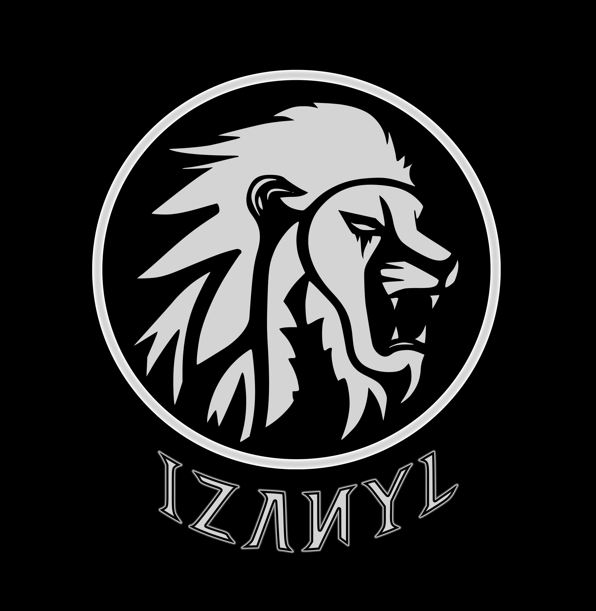

Lion Logo


Over the years, I have created many logos that would fit well with my identity. I was however, always indecisive when it came to choosing a logo for myself. A personal fact about me is that I have experienced many hardships in life, but all of those situations eventually helped increase my mental strength. Each animal seems to have a respresentation of some kind; To me the lion represents strength. I have always been interested in tigers, lions, or just about any wildcat. That is also why I chose the Lion as my main logo.
The 'droplets' / mark under the eye of the lion is supposed to represent its mysterious and menacing portion. The colors are unique to me because I have always liked the color Blue. The logo has a sky blue color as the glow, and a teal border on the outer circle. There is however, secondary logos that I have also tied into my identity, and that is the Owl; an owl that represents mystery.
The word 'izanyl' is supposed to be my username/nickname/identity brandname. The pronunciation is supposed to sound like ( iza-nel / i-za-nel ) like this google translation example. It was more of a random name that I "gave" myself by removing and adding letters with my name 'Ivan'. At first I ended up liking how 'izanel' sounded in english. However, there was a friend that would call me by that nickname but would often pronunciate it in spanish. I now prefer it that way. Not to mention, I was not a fan of the letter 'e' in the name 'izanel', so I replaced it with the letter 'y'. People seem to always be curious about how the pronunciation sounds like.
Blender Logo Progress
Here we have a snippet of when I was working on Blender - I decided to work on a new animation in order to update & animate the logo that is shown in the homepage. Unfortunaly, the file size is too large in mp4 and gif format, so the intro gif may lack quality. This logo is also a variation of the original lion which is slightly different.

Blender Logo Progress
This was the very first animation that I created & worked on in Blender. I had minor logo issues on this animation, which left me with no choice but to eventually remove it from the Homepage.